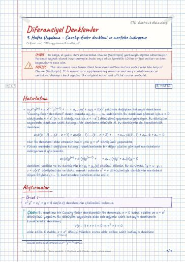

Differential Equations · Digital lecture note
Week 9 Recitation – Cauchy–Euler equation and reduction of order
Diferansiyel Denklemler – 9. Hafta Uygulama – Cauchy–Euler denklemi ve mertebe indirgeme
- Course
- Differential Equations (MAT215)
- Semester
- Semester 3 · Fall 2022–23
- Format
- PDF · 4 pages · 0.1 MB · handwriting-style LaTeX
- Language
- Turkish
- Original note
- DIF-uygulama-9-hafta.pdf
Open the PDF (0.1 MB)LaTeX source (.tex)Original handwritten note

What is in this note?
Section headings of the note (in Turkish):
- Hatırlatma
- Alıştırmalar
Text of the note
Show as plain text (Turkish; formulas and drawings are not included)
olmalı. şeklinde değişken katsayılı denkleme ``Cauchy-Euler denklemi'' denir, burada a_0, a_1, …, a_n sabitlerdir. Bu denklemi çözmek için x>0 olduğunda x = e^t ( x<0 olduğunda ise x = -e^t ) dönüşümü yapmamız gerekiyor. Bu dönüşüm sayesinde, denklem sabit katsayılı bir denkleme dönüşür ki, bu denklemin de karakteristik denklemi
olur. Bu denklemi elde etmenin basit yolu y = x^k dönüşümü yapmaktır.
Yüksek mertebeli değişken katsayılı denklemlerde bir diğer çözüm yöntemi mertebelerin indirgenmesi yöntemidir.
denklemi verilsin ve bu denklemin bir y_1 = y_p(x) çözümü bilinsin. Bu durumda, `` y = u· y_1 ; u = u(x) '' dönüşümüyle ve daha sonraki adımda u' = v dönüşümüyle denklemin mertebesi düşer. Böylece (n-1) . mertebeden denklem elde edilir.
Bu denklem bir Cauchy-Euler denklemidir. Bu durumda, x>0 kabul edelim ve x = e^t dönüşümü yapalım. Bu dönüşüm sayesinde elde edeceğimiz sabit katsayılı denklemin karakteristik denklemi,
elde edilir. O halde, (t= x)x = e^t dönüşümünden sonra elde edilen sabit katsayılı denklem y_t'' + y_t = 4 t şeklinde olmalıdır. Şimdi, bu denklemin çözümünü bulalım.
O halde, özel çözüm y_p(t) = -2t t bulunur. Bu durumda genel çözüm
olacağından t = x dönüşümü yapılarak
Bu denklem bir Cauchy-Euler denklemidir. Bu durumda, x>0 kabul edelim ve x = e^t dönüşümü yapalım. Bu dönüşüm sayesinde elde edeceğimiz sabit katsayılı denklemin karakteristik denklemi,
elde edilir. O halde, x = e^t (t = x) dönüşümünden sonra elde edilen sabit katsayılı denklem y_t'' - 5y_t' + 4y_t = 4e^2t - 6e^3t şeklinde olmalıdır.
Şimdi, bu denklemin çözümünü bulalım.
Bu durumda, genel çözüm
olacağından t = x dönüşümü yapılarak
verilmiş bir çözümü olsun. Genel çözümü bulunuz.
Denklemde yerine yazarsak,
Şimdi; u' = v dönüşümü yapalım.
o.ü. integrasyon çarpanı hesaplanır.
integrasyon çarpanı ile çarparsak,
verilmiş bir çözümü olsun. Mertebe düşürerek genel çözümü bulunuz.
y = ux Claude notu: muhtemelen y = ue^2x olmalı (sonraki satırda öyle kullanılmış). ; u = u(x) dönüşümü yapalım.
Denklemde yerine yazarsak,
Şimdi, u' = v dönüşümü yapalım.
Lineer denklemin her tarafını e^2x+1(2x+1)^-1 ile çarpalım